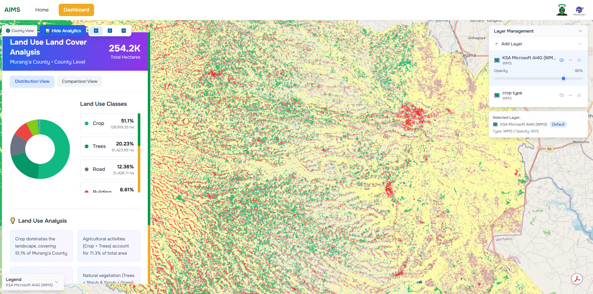
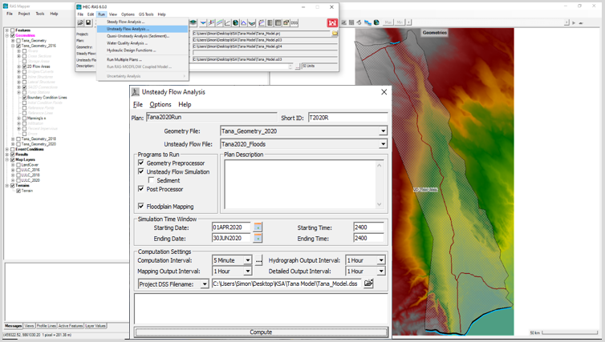

Projects

Agricultural Project - KSA
Development and implementation of Earth Observation products for the agricultural sector in Kenya, including LULC maps, crop monitoring, and advisory systems.

Flood Risk Analysis - Lower Tana River Basins
Machine learning algorithms for flood mapping, stakeholder coordination, and hazard catalogue creation.

Education & Outreach
Awareness programs reaching over 7000 students, publishing educational modules, and organizing webinars on GeoSTEM careers.
Publications
Courses & Certifications
- AWS Cloud Practitioner Certified – Amazon Web Services
- AI & Space Summer Course - Amsterdam Law and Technology Institute
- Python for Everyone – University of Michigan
- SQL Fundamentals – DataCamp
- R Programming – Udemy
- Space Law for New Space Actors – United Nations E-Learning
- Project Management – European Business Institute Luxembourg
- Mapping Crops – ARSET, NASA
- Humanitarian Simulation – NASA Lifeline
- Basic Remote Sensing for Educators – Junior Academy of Sciences of Ukraine